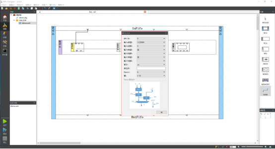

RPU Designer使用手册
用户使用本软件，可以方便对RPU进行重构配置，同时支持软件仿真调试和硬件联调，还具备烧写固件等功能。
操作系统：window7以上或者linux
rpu_designer
├─bin 可执行程序目录，存放主程序以及其他小工具
├─doc 文档目录，存放软件相关文档
├─etc 配置目录，存放软件配置信息
├─image 图片资源目录，存放软件所需的图片资源
├─lib 库目录
├─log 日志输出目录，存放软件打印的日志文件
├─tmp 临时文件目录
└─var 参数变量目录
本软件提供windows和linux的两个运行版本
Windows下有双击安装包进行安装：
安装成功后，主程序rpu_designer.exe在安装目录下的bin目录下，双击打开即可运行。
Linux下，将运行包进行解压
解压完成后，主程序rpu_designer在安装目录下的bin目录下，在shell中运行bin目录下的rpu_designer.sh来运行程序。
将算法流程用配置1~n张子图的方式呈现出来
点击新建项目----->命名项目----->ok
在左侧的项目名上右击----->添加新文件----->命名新子图名---->ok
双击项目名展开项目--->双击子图文件(.xml)打开子图显示在工作区
此时子图文件是全新的空白文件，等待用户将元素添加进去
单击右侧功能元素，然后在工作区中想要放置的位置点击，将元素添加到子图中。
注意：想要添加bfu、sbox、benes、memory、wire等具体算子和元素，必须先将bcu和rcu添加到子图中。
单击右侧的wire元素，先点击工作区某个输出端口，再点击某个输入端口，如果这两个端口是允许连接的，工作区上会显示出连线
注意：在工作区中，算子的输出端口为算子模型下侧的端口，输入端口为算子模型上侧的端口；另外infifo的4个端口为输出端口，outfifo的4个端口为输入端口
双击工作区某个算子----->弹出属性框----->设置属性----->ok

注：
双击bfu、sbox、benes算子模型分别设置各自的输入来源和属性；
双击rcu模型设置该行的memory读写端口和模式
双击bcu模型设置bcu的router信息和该bcu的outfifo的输入来源
可以修改元素id，修改id后有一些原本的连线可能不会保留
资源文件包括infifo文件、memory初始化文件、sbox数据文件、benes配置文件等
右键点击项目名---->添加新资源---->选择资源类型---->命名资源名和设置路径--->ok
注：一个Sbox资源文件包含一个sbox模块需要的数据，即1024*4个32位数据
在资源界面，所有的数据都是以16进制显示和编辑的，用户可以对表格数据进行增删改以及复制粘贴等操作。
左侧窗口栏选择“项目”---->在子图中添加各自的infifo文件和memory初始化文件---->
设置每张子图的流程信息---->勾选要运行仿真的子图以及调整运行顺序---->保存
点击左侧功能栏“运行”---->等待仿真结束出现结果显示窗口---->在子图名右击可以将结果数据保存为文件到安装根目录下的var/[RCS]runResult目录
点击左侧功能栏“调试”--->进入调试界面--->控制方式如下图所示
菜单调试--->生成配置码--->查看配置码文件目录
Q：为什么我打开文件时提示文件已损坏？
A：如果确定该文件是正确的子图文件，出现这种情况有可能该文件在外部进行了修改，而程序为了文件安全默认对文件进行外部修改的校验，可以在“菜单-设置-首选项-编辑”中将xml文件校验和资源文件校验勾去掉。
Q：为什么RCS报告错误：$error:burst/loop/repeat number of dest cannot be finished within max cycle number？
A：出现这种报错代表某张子图的设置的burst_number/loop_number/repeat_number不能在最大周期内满足，首先检查这些参数是不是无论跑多少周期都无法满足，如果相信是可以满足的则可以在“设置-首选项-调试运行”中将最大周期数调大再运行。
Q：为什么RCS报告错误：$error: ReadMemory() mode_128 error?
A：出现这种报错代表某张子图的某行的memory读模式在选择128模式的情况下，初始地址的配置不符合要求，符合要求的地址为4个地址必须是按左右顺序且同行的地址或者按左右顺序且组成一条正斜线的地址，如0,1,2,3和0,5,a,f都是合法的。